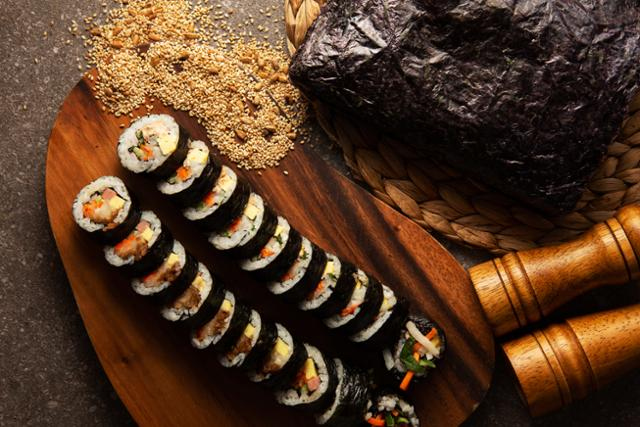

Gimbap

Description
Gimbap, also romanized as kimbap, is a Korean dish made from cooked rice and ingredients such as vegetables, fish and meats that are rolled in gim—dried sheets of seaweed—and served in bite-sized slices.
Ingredients
- 1 Seaweed pack
- 1 bunch (350g) of Spinach
- 10 eggs
- 1 carrot
- 600g Rice
- 1 tsp (3g) Flavored salt (for seasoning rice)
- 2 tbsp (12g) Sesame oil (for seasoning rice)
- Flavored salt
- Brown sugar
- Sesame oil
- Cooking oil
- Pickled radish
Steps
- Remove the spinach roots, add oil to the pan, and cook the spinach with some flavoring salt.
- Julienne the carrot into thin strips.
- Coat the pan with oil and cook the julienned carrot with some flavoring salt.
- Beat the eggs, add flavoring salt and brown sugar and mix thoroughly, add oil to the pan, and cook the egg mixture into thin sheets.
- Add the flavoring salt and sesame oil to the rice and mix thoroughly with a paddle.
- Add brown sugar, vinegar, and water in a big bowl and stir until the sugar is completely melted (for pickling the radish).
- Cut the whole pickled radish into strips.
- Place the radish strips into the mixture and let them stand.
- Spread the rice thinly to cover 2/3 of the seaweed.
- Place spinach, julienned carrots, egg, crab stick, braised burdock root, and pickled radish on the rice, and then roll.
- Coat the rolled gimbap with sesame oil to finish and cut into decent sizes.